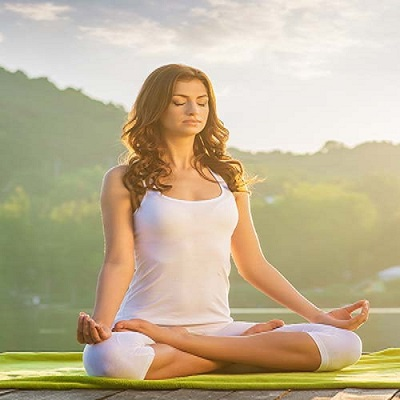

Padmasana - Lotus Position
Padma = Lotus, asana = posture or pose. Pronounced: Pa-dah-maa-sun-aa
Padmasana or Lotus position is a cross-legged yoga posture which helps deepen meditation by calming the mind and alleviating various physical ailments. A regular practice of this posture aids in overall blossoming of the practitioner, just like a lotus; and hence the name Padmasana. In Chinese and Tibetan Buddhism, the Lotus pose is also known as Vajra position.

How to do Padmasana (Lotus Position)
1. Sit on the floor or on a mat with legs stretched out in front of you while keeping the spine erect.
2. Bend the right knee and place it on the left thigh. Make sure that the sole of the feet point upward and the heel is close to the abdomen.
3. Now, repeat the same step with the other leg.
4. With both the legs crossed and feet placed on opposite thighs, place your hands on the knees in mudra position.
5. Keep the head straight and spine erect.
6. Hold and continue with gentle long breaths in and out.
Mudras for Padmasana (Lotus Position)
Mudras stimulate the flow of energy in body and can have amazing effects when practiced with Padmasana. Every mudra differs from each other and so do their benefits. When sitting in Padmasana, you can deepen your meditation by incorporating either Chin mudra, Chinmayi mudra, Adi mudra or Brahma mudra. Breathe for a few minutes while in the mudra and observe the flow of energy in the body.

5 Benefits of the Padmasana (Lotus Position)
1. Improves digestion.
2. Reduces muscular tension and brings blood pressure under control.
3. Relaxes the mind.
4. Helps pregnant ladies during childbirth.
5. Reduces menstrual discomfort.